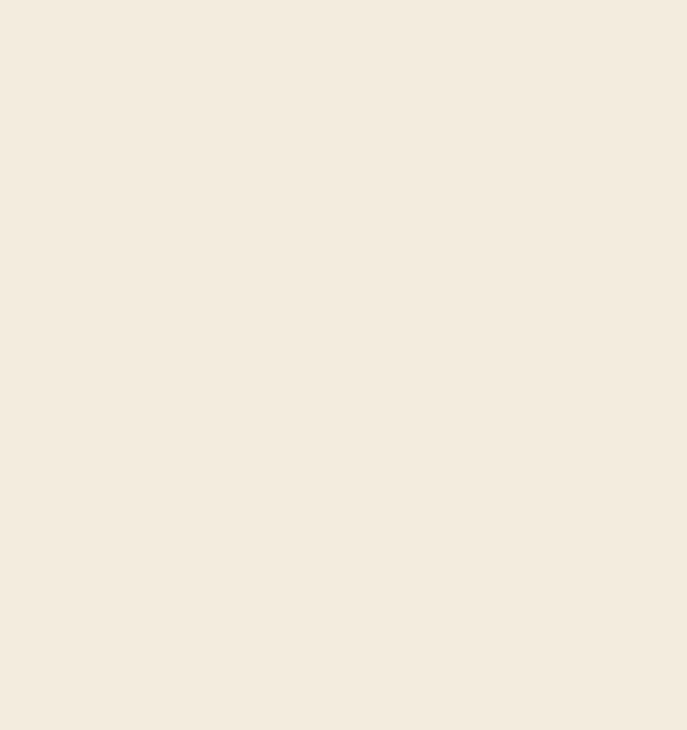

De afgelopen periode heb ik gewerkt aan drie leerdoelen: animaties met CSS, nettere code schrijven en theming met aandacht voor toegankelijkheid. Als ik terugkijk, valt het me op dat animaties beter ging dan ik van tevoren had verwacht. Dit heb ik tijdens css to the rescue wel echt heel erg moeten inzetten en ik vond het in het begin echt heel erg lastig, want ik wist gewoon niet waar ik moest beginnen. Ik ben wel blij met wat mij uiteindelijk is gelukt om te doen, maar er zijn nog heel veel dingen die ik qua css animaties wil uitproberen.
Iets waar ik echt trots op ben is dat ik nieuwe CSS-technieken heb geleerd die ik daarvoor nooit had gebruikt, zoals CSS nesting en @layer. Dat voelt als een echte stap vooruit, omdat ik merk dat mijn code daar overzichtelijker van wordt. Ook al is het nog wel een work in progress om mijn code netjes te houden. Ook ben ik meer comments gaan gebruiken waardoor ik makkelijk kan teruglezen en vinden.
Theming en toegankelijkheid vind ik nog steeds lastig. Light en dark mode, kleurkeuzes voor voldoende contrast en reduced motion zijn dingen waar ik bewust mee bezig wil zijn, maar het voelt nog niet als iets wat ik automatisch meeneem. Light en dark mode lukt mij wel, maar het is toch wel een puntje voor mij dat ik meer moet opletten met toegankelijkheid. Bij HCD en BT heb ik wel echt mijn best gedaan om daar mijn focus op te leggen en wil dit graag meer automatisme maken.
